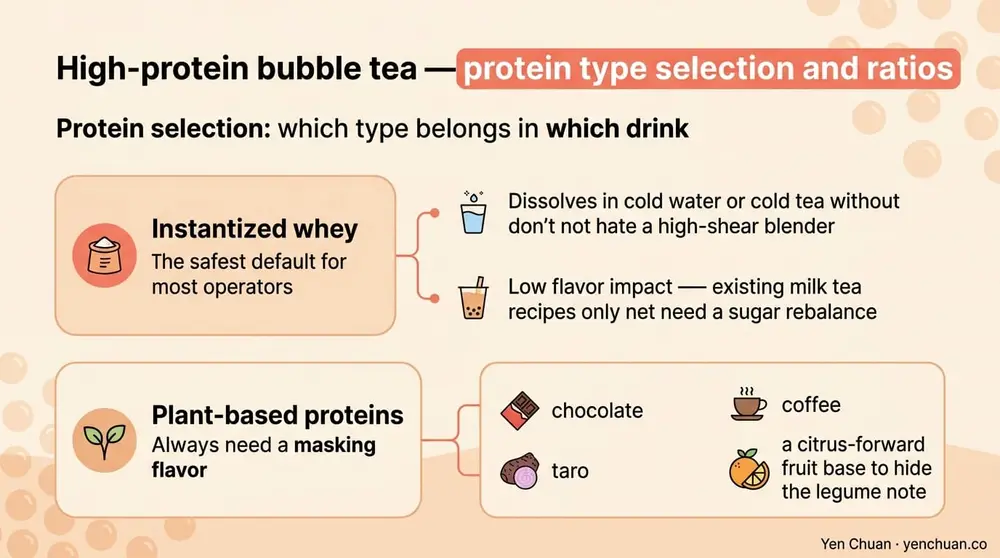
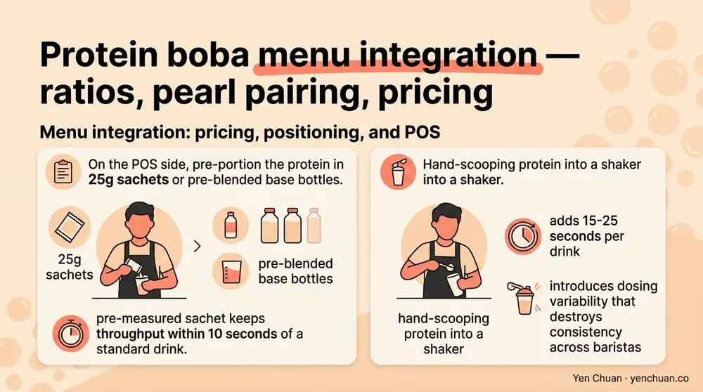

Articles / Business & sourcing
High-Protein Bubble Tea Formulation Guide
2026-04-27 · Technical Guide, Industry Trends, Product Spotlight

Adding 15-25 grams of protein to a cup of boba sounds simple until you actually try it. The powder clumps, the tea goes chalky, the pearls fall apart in an acidic shaker, and the final drink tastes like a gym shake wearing a bubble tea costume. Over the past eighteen months we've helped chains in Singapore, Dubai, Los Angeles, and Seoul launch high-protein boba lines — and the ones that succeed share a specific set of ratios, mouthfeel choices, and menu-integration moves. This guide walks through the technical playbook we give our R&D partners, from protein selection through POS setup.
Why high-protein boba is a real category now, not a gimmick
The global high-protein beverage segment grew 18.4% CAGR through 2025 according to Mordor Intelligence, and the fastest-growing sub-segment is not traditional sports nutrition — it's indulgent beverages reformulated with added protein. Starbucks tested protein cold foam in 2025, and regional chains across Asia followed within six months. For a boba operator, the pitch is straightforward: a 500ml cup that delivers 20g of protein replaces a lunch instead of adding empty calories to one. Chains that added a high-protein row to their menu in 2025 reported 8-14% same-store sales lift from that row alone, pulled mostly from the 2-4pm meal-replacement window.
The catch is that boba's texture and flavor architecture were not built for 20g of protein. A standard milk tea carries roughly 2-3g of protein from dairy; jumping to 20g requires rebuilding the base. The sections below cover the three things that break — solubility, mouthfeel, and pearl compatibility — and the ratios that fix them.
Protein selection: which type belongs in which drink
Not every protein behaves the same way in a cold-shaken beverage. Here's how the common options stack up for boba R&D:
| Protein | Solubility cold | Mouthfeel | Flavor impact | Best use |
|---|---|---|---|---|
| Whey Protein Concentrate 80 | Good | Creamy, slight dryness | Mild dairy note | Milk teas, chocolate, taro |
| Whey Protein Isolate 90 | Excellent | Light, clean | Very neutral | Fruit teas, delicate flavors |
| Instantized whey | Excellent | Clean, no clumping | Neutral | Shaker drinks, cold foam |
| Milk Protein Concentrate | Good | Rich, full-bodied | Dairy forward | Latte-style, matcha |
| Soy protein isolate | Fair | Slightly chalky | Beany if untreated | Vegan milk teas |
| Pea protein isolate | Fair | Gritty without blending | Earthy, needs masking | Vegan specialty, functional SKUs |
| Collagen peptides | Excellent | Zero impact | Neutral | Add-on shot, not base |
For most operators, instantized whey is the safest default — it dissolves in cold water or cold tea without a high-shear blender, and its flavor impact is low enough that existing milk tea recipes only need a sugar rebalance. Plant-based proteins always need a masking flavor (chocolate, taro, coffee) or a citrus-forward fruit base to hide the legume note.

The ratio that makes or breaks mouthfeel
The single most common failure we see in first-pass high-protein boba recipes is overshooting protein relative to fat and sweetener. Protein absorbs water and dries mouthfeel; without enough fat or hydrocolloid to rebuild richness, the drink feels chalky and leaves a coating on the tongue.
Our working target for a 500ml cup delivering 20g protein:
- Protein: 22-25g of powder (yields ~20g pure protein depending on form)
- Fat: 3.5-5g from non-dairy creamer or cream
- Sugar: 18-25g (roughly 60-70% of a standard boba recipe — protein reduces perceived sweetness threshold)
- Hydrocolloid support: 0.05-0.1% xanthan or 0.1-0.2% low-acyl gellan, for body
- Tea: Brewed stronger than standard (120-130% of base) — protein mutes tea tannin
The hydrocolloid is the difference-maker. A pinch of xanthan or gellan gives the drink the viscosity an all-dairy base would have naturally, without adding calories. We use this in almost every high-protein SKU we co-develop. Pairing the hydrocolloid with a Taiwanese-grade non-dairy creamer keeps fat stable across the pasteurization or pre-mix shelf life.
Pearl and topping compatibility
Tapioca pearls in a low-pH fruit-protein shaker drink will dissolve on their shift. Pearls in a high-ionic-strength protein-dairy base will firm up faster than usual and go gummy within two hours. Both failure modes kill a menu item.
Operating guidance we give our accounts:
- Milk tea style (pH 6.5-6.8): Standard black pearls work fine. Reduce holding time to 4 hours instead of the normal 6 — higher dissolved solids accelerate starch retrogradation.
- Fruit protein drinks (pH 3.5-4.5): Switch to modified-starch "crystal" pearls or popping boba. Classic tapioca loses integrity in 30-45 minutes at that pH.
- Matcha and taro protein bases: Use honey-glazed pearls at slightly lower soak concentration to avoid stacking sweetness, since protein already carries some malt-like notes.
- Collagen shots and protein add-ons: These go in last, stirred not shaken, to avoid foaming that destabilizes a layered drink.
Test every pearl type with the actual protein base through a full 4-hour holding window before approving a SKU. Bench-test results don't predict service-window performance.
Menu integration: pricing, positioning, and POS
A high-protein row works best when it's visually and operationally separate from the standard menu — not an upcharge on existing drinks, but its own identity. The chains with the strongest lift in 2025 used three consistent patterns:
Dedicated row, not an add-on. A "Protein+" or "Power Boba" section with 4-6 SKUs (classic milk tea, matcha, taro, strawberry, chocolate, coffee) performs better than a "+$1.50 add protein" modifier. Customers reading the menu decode the commitment faster.
Price premium of 25-40% over standard equivalent. A USD 5.50 standard milk tea with 20g protein added should retail at USD 7.00-7.70. Below 25%, you erode margin without signaling value; above 40%, you lose the impulse-purchase layer.
Meal-replacement framing in marketing. "Lunch in a cup — 20g protein" outperforms "now with added protein" by 2-3x in our A/B tests. The customer needs to understand what the drink is replacing, not what's been added.
On the POS side, pre-portion the protein in 25g sachets or pre-blended base bottles. Hand-scooping protein into a shaker adds 15-25 seconds per drink and introduces dosing variability that destroys consistency across baristas. A pre-measured sachet keeps throughput within 10 seconds of a standard drink.

Recipe example: signature high-protein brown sugar milk tea
For a 500ml cup, 20g protein target:
- Brew 180ml strong black tea (leaf ratio 1.3x standard), cool to 8°C
- In shaker: 25g instantized WPC 80, 15g brown sugar syrup, 4g non-dairy creamer, 0.03g xanthan
- Add 120ml oat milk (4°C) to shaker, dry-shake 4 seconds
- Add 100ml cooled black tea, wet-shake with ice 8 seconds
- Pour over 80g pre-soaked brown sugar tapioca pearls
- Top with 20ml brown sugar drizzle on cup wall
Sensory target: viscosity similar to a standard milk tea, no chalky finish, clean dairy-tea balance, pearls holding integrity through 4 hours at 4°C.
This formula is a starting point — regional sugar preferences, local milk specs, and pearl suppliers all change the optimal numbers. For operators building a full protein row, a day of menu design and R&D with a supplier who can bench-test with your actual SKUs compresses the development curve from months to weeks. The same sourcing and supplier vetting process that applies to your standard ingredients applies double to protein — testing data and lot consistency matter more when the ingredient is 20x more concentrated in each cup.
Sources
- Mordor Intelligence — Protein-Based Beverages Market
- Food Business News — Protein Beverage Innovation
- International Dairy Foods Association — Dairy Protein Resources
- Journal of Food Science — Whey Protein in Beverage Systems
- Grand View Research — Functional Beverages Market
About Yen Chuan
Yen Chuan has been at the heart of Taiwan's bubble tea industry for over 20 years, supplying premium powders, syrups, tapioca pearls, and tea leaves to thousands of boba shops worldwide. With an in-house R&D lab and a commitment to quality ingredients, Yen Chuan is more than a supplier — we're your partner in the boba business. Our team has co-developed high-protein milk tea SKUs for chains across Asia-Pacific and North America, and we stock the whey concentrates, plant proteins, and hydrocolloid systems most operators need to launch a protein row without a second tolling partner.
Build your protein row with a Taiwan R&D partner
Planning a protein boba launch or reworking a current SKU? Browse our ingredient catalog or talk to our R&D team — we bench-test recipes with your actual base and ship finished blends from Taiwan.
Frequently Asked Questions
Q: How much protein should a high-protein bubble tea deliver?
A: The functional sweet spot for a 500ml cup is 20g of protein — enough to qualify as a meal-replacement claim in most markets and to meaningfully reduce appetite for 3-4 hours. Below 15g, the drink doesn't change the customer's behavior; above 25g, chalkiness and cost-per-cup both climb without added perceived benefit.
Q: What's the best protein powder for boba tea?
A: Instantized whey protein concentrate or isolate is the best all-around choice — it dissolves cold without a blender and has minimal flavor impact. Milk protein concentrate works well for latte-style drinks. For vegan SKUs, a blended soy-pea system masked with chocolate or coffee delivers the cleanest result.
Q: Will tapioca pearls hold up in protein bubble tea?
A: Standard black tapioca pearls hold well in milk-based protein drinks at pH 6.5-6.8, but only for about 4 hours instead of 6. In acidic fruit-protein drinks below pH 4.5, classic pearls break down in 30-45 minutes — switch to modified-starch crystal pearls or popping boba for those SKUs.
Q: How much should I price a high-protein bubble tea?
A: A 25-40% premium over the standard equivalent is the sweet spot. If a standard milk tea retails at USD 5.50, the 20g-protein version prices at USD 7.00-7.70. Below 25% erodes margin without signaling value; above 40% loses the impulse-purchase layer.
Q: Does adding protein make bubble tea taste chalky?
A: Only if the ratios are wrong. Protein absorbs water and dries mouthfeel, so the recipe needs 3.5-5g of fat and a small amount of xanthan or gellan hydrocolloid (0.05-0.1%) to rebuild body. When ratios are correct, a protein boba feels nearly identical to a standard one in viscosity and finish.